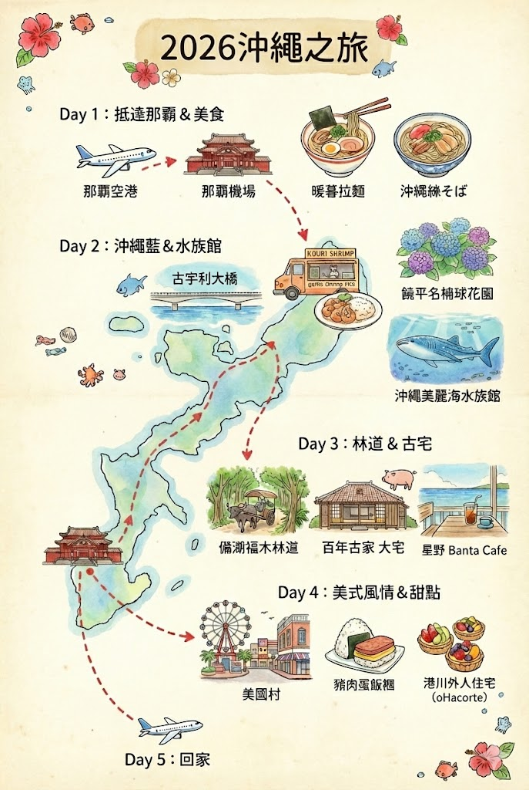

🗺️ 行程地圖

🗺️ 行程概要
旅遊路線：那霸 → 本部(北部) → 恩納(中部) → 那霸
策略：由南往北，再由北往南的順路跑法
策略：由南往北，再由北往南的順路跑法
✈️ 航班資訊
去程：6/12 (四) BR186 19:15 抵達那霸機場
回程：6/16 (一) BR113 10:15 起飛
回程：6/16 (一) BR113 10:15 起飛
🌊 精選景點：古宇利大橋、美麗海水族館、備瀨福木林道、美國村、港川外人住宅區
🌸 季節限定：饒平名繡球花園（6月藍紫色花海）
🌸 季節限定：饒平名繡球花園（6月藍紫色花海）
6/12 (四) Day 1
那霸
19:15 抵達 → 飯店 Check-in → 傑克牛排
6/13 (五) Day 2
往北移動
古宇利大橋 → 蝦蝦飯 → 繡球花園 → 美麗海水族館 → 本部牧場
6/14 (六) Day 3
中部漫遊
備瀨福木林道 → 百年古家大家 → Banta Cafe → 島豚屋
6/15 (日) Day 4
回那霸
美國村 → 港川外人住宅區 → 琉球茶房
6/16 (一) Day 5
返台
還車 → 10:15 起飛
📅 詳細行程
6/12 (四) Day 1 - 抵達與休息
那霸
19:15 抵達那霸機場（出關約 45-60 分鐘）
計程車前往那霸市區飯店 15-20分（費用約 ¥2,000-2,500）
20:40 飯店 Check-in
住宿：那霸市區（國際通周邊）
6/13 (五) Day 2 - 沖繩藍與繡球花
往北移動
09:30 那霸市區取車（OTS/ORIX等）
10:00 出發，走高速公路（西原IC - 許田IC）1h30m
25分
景點 2：饒平名繡球花園
6月季節限定，滿山藍紫色花海（園區有坡度，請長輩慢慢走）
6月季節限定，滿山藍紫色花海（園區有坡度，請長輩慢慢走）
20-25分
10分
晚餐：燒肉本部牧場 Motobu Bokujo
本部牛燒肉，環境好、肉質佳
本部牛燒肉，環境好、肉質佳
住宿：Hotel Orion Motobu（就在水族館旁）
6/14 (六) Day 3 - 綠色林道與百年老宅
中部漫遊
10:00 飯店退房，5分
20-25分
往南前往恩納村/讀谷村 50-60分（沿途看海）
15-20分
16:30 恩納村海濱飯店 Check-in
10-15分
住宿：恩納村（推薦 Sheraton 或 Rizzan Sea Park）
6/15 (日) Day 4 - 美式風情與甜點
回那霸
10:30 飯店退房，往南行駛 30-40分
15-20分
景點 2：港川外人住宅區 Minatogawa Stateside Town
美軍眷村改建的白色小屋群，很多文青小店
美軍眷村改建的白色小屋群，很多文青小店
返回那霸市區飯店 20-30分（週日傍晚容易塞車，建議提早出發）
17:00 飯店 Check-in 與還車前加油
那霸市區內移動 15分
住宿：那霸市區（推薦 JR九州 Blossom 或 Hyatt Regency）
6/16 (一) Day 5 - 早班機返台
返台
07:30 退房
08:00 抵達租車公司還車
搭接駁車前往機場 15分（上班時間車多，預留緩衝）
10:15 起飛 (BR113)
🍴 美食清單
🌟 網紅美食 × 長輩友善 完美組合！
🔥 網紅打卡美食
📍 位置：古宇利島
🌟 特色：蒜味濃厚超下飯，IG打卡名店
💡 小提示：若沒位子可外帶到車上吃
🌟 特色：蒜味濃厚超下飯，IG打卡名店
💡 小提示：若沒位子可外帶到車上吃
📍 位置：港川外人住宅區
🌟 特色：必吃！新鮮水果塔，視覺味覺雙重享受
💡 小提示：下午容易賣完，建議早點去
🌟 特色：必吃！新鮮水果塔，視覺味覺雙重享受
💡 小提示：下午容易賣完，建議早點去
📍 位置：美國村
🌟 特色：沖繩靈魂早餐，份量大又好吃
💡 小提示：當午餐也很適合
🌟 特色：沖繩靈魂早餐，份量大又好吃
💡 小提示：當午餐也很適合
👴 長輩友善餐廳
📍 位置：名護市
🌟 特色：百年木造建築吃阿古豬，氣氛無敵
⚠️ 重要：務必提前訂位
👍 長輩友善：舒適座位、精緻服務
🌟 特色：百年木造建築吃阿古豬，氣氛無敵
⚠️ 重要：務必提前訂位
👍 長輩友善：舒適座位、精緻服務
📍 位置：首里城附近
🌟 特色：日式庭園餐廳，氣氛雅緻
⚠️ 重要：需預約
👍 長輩友善：長輩會非常喜歡的環境
🌟 特色：日式庭園餐廳，氣氛雅緻
⚠️ 重要：需預約
👍 長輩友善：長輩會非常喜歡的環境
📍 位置：本部町
🌟 特色：本部牛燒肉，環境好、肉質佳
👍 長輩友善：舒適環境，適合家庭聚餐
🌟 特色：本部牛燒肉，環境好、肉質佳
👍 長輩友善：舒適環境，適合家庭聚餐
📍 位置：那霸市區
🌟 特色：沖繩美式牛排始祖，菲力牛排軟嫩
💡 小提示：營業到深夜，知名排隊店
👍 長輩友善：菲力牛排軟嫩適合長輩
🌟 特色：沖繩美式牛排始祖，菲力牛排軟嫩
💡 小提示：營業到深夜，知名排隊店
👍 長輩友善：菲力牛排軟嫩適合長輩
☕ 特色咖啡廳
📍 位置：讀谷村
🌟 特色：建在海邊岩石上的咖啡廳
💡 推薦：榻榻米區或室內沙發區
👍 長輩友善：可以躺著看海，點杯泡泡茶拍照
🌟 特色：建在海邊岩石上的咖啡廳
💡 推薦：榻榻米區或室內沙發區
👍 長輩友善：可以躺著看海，點杯泡泡茶拍照
🚗 交通資訊
✈️ 航班資訊
去程：6/12 (四) BR186 19:15 抵達那霸機場
回程：6/16 (一) BR113 10:15 起飛
回程：6/16 (一) BR113 10:15 起飛
🚗 租車建議
取車：6/13 (五) 早上 09:30 那霸市區
還車：6/16 (一) 早上 08:00 那霸市區
總天數：3天3夜
推薦公司：OTS、ORIX、Times Car Rental
還車：6/16 (一) 早上 08:00 那霸市區
總天數：3天3夜
推薦公司：OTS、ORIX、Times Car Rental
💡 為什麼第一晚不租車？
• 省去第一晚停車費
• 避免夜間取車的疲勞
• 計程車從機場到那霸市區只要 ¥2,000-2,500
• 省去第一晚停車費
• 避免夜間取車的疲勞
• 計程車從機場到那霸市區只要 ¥2,000-2,500
🚗 每日車程統計
Day 2 (6/13)：總車程約 2 小時 30 分鐘
• 那霸 → 古宇利島 (1h30m)
• 古宇利島 → 繡球花園 (25m)
• 繡球花園 → 美麗海水族館 (20-25m)
• 水族館 → 本部牧場 (10m)
Day 3 (6/14)：總車程約 1 小時 30 分鐘
• 飯店 → 備瀨福木林道 (5m)
• 福木林道 → 百年古家 (20-25m)
• 百年古家 → 恩納村 (50-60m)
• 恩納村 → Banta Cafe (15-20m)
• Banta Cafe → 飯店 (15-20m)
• 飯店 → 晚餐 (10-15m)
Day 4 (6/15)：總車程約 1 小時 15 分鐘
• 恩納村 → 美國村 (30-40m)
• 美國村 → 港川外人住宅 (15-20m)
• 港川 → 那霸飯店 (20-30m)
• 飯店 → 琉球茶房 (15m)
• 那霸 → 古宇利島 (1h30m)
• 古宇利島 → 繡球花園 (25m)
• 繡球花園 → 美麗海水族館 (20-25m)
• 水族館 → 本部牧場 (10m)
Day 3 (6/14)：總車程約 1 小時 30 分鐘
• 飯店 → 備瀨福木林道 (5m)
• 福木林道 → 百年古家 (20-25m)
• 百年古家 → 恩納村 (50-60m)
• 恩納村 → Banta Cafe (15-20m)
• Banta Cafe → 飯店 (15-20m)
• 飯店 → 晚餐 (10-15m)
Day 4 (6/15)：總車程約 1 小時 15 分鐘
• 恩納村 → 美國村 (30-40m)
• 美國村 → 港川外人住宅 (15-20m)
• 港川 → 那霸飯店 (20-30m)
• 飯店 → 琉球茶房 (15m)
⚠️ 重要交通提醒：
• Day 2 走高速公路：西原IC → 許田IC（省時舒適）
• Day 3 走一般道路：沿途可欣賞海景
• Day 4 週日傍晚：58號公路進那霸非常塞車，建議 16:00 前就開始往飯店移動
• 還車前記得加油：機場附近有多家加油站
• Day 2 走高速公路：西原IC → 許田IC（省時舒適）
• Day 3 走一般道路：沿途可欣賞海景
• Day 4 週日傍晚：58號公路進那霸非常塞車，建議 16:00 前就開始往飯店移動
• 還車前記得加油：機場附近有多家加油站
💡 旅遊小提示
🎯 行程設計理念：由南往北，再由北往南的順路跑法
每日僅安排 2 個主要大點，輕鬆不趕
每日僅安排 2 個主要大點，輕鬆不趕
⏰ 車程控制
• 每天最長的一段車程都不超過 1.5 小時
• 避免長輩久坐勞累
• 預留充足休息時間
• 避免長輩久坐勞累
• 預留充足休息時間
🍽️ 美食策略
網紅店：
• Kouri Shrimp (蝦飯)
• oHacorte (水果塔)
• Pork Tamago (飯糰)
→ 滿足打卡與口味
長輩友善店：
• 大家 Ufuya (百年古家)
• 琉球茶房
• 本部牧場
→ 滿足舒適座位與精緻服務
• Kouri Shrimp (蝦飯)
• oHacorte (水果塔)
• Pork Tamago (飯糰)
→ 滿足打卡與口味
長輩友善店：
• 大家 Ufuya (百年古家)
• 琉球茶房
• 本部牧場
→ 滿足舒適座位與精緻服務
🌸 季節特色
6月限定：饒平名繡球花園
• 滿山藍紫色花海
• 園區內有部分坡道
• 若長輩膝蓋不好，可在平地休息區賞花
• 不一定要爬到最高點
• 滿山藍紫色花海
• 園區內有部分坡道
• 若長輩膝蓋不好，可在平地休息區賞花
• 不一定要爬到最高點
👴 長輩友善安排
• 古宇利海洋塔：搭無人電動車上山，有冷氣看海
• 備瀨福木林道：必搭水牛車，不用走路
• 美麗海水族館：全室內冷氣，下午人潮少
• Banta Cafe：榻榻米區可躺著看海
• 餐廳選擇：都有舒適座位與精緻服務
• 備瀨福木林道：必搭水牛車，不用走路
• 美麗海水族館：全室內冷氣，下午人潮少
• Banta Cafe：榻榻米區可躺著看海
• 餐廳選擇：都有舒適座位與精緻服務
⚠️ 特別注意事項：
1. Day 4 回那霸：
週日傍晚 58 號公路進那霸非常塞車
建議 16:00 左右就開始往飯店移動
2. 餐廳訂位：
• 百年古家 大家：務必提前訂位
• 琉球茶房：需預約
• 琉球之牛：需預約
3. 繡球花園：
• 園區有坡度，請長輩慢慢走
• 若膝蓋不好，平地休息區賞花即可
4. 租車須知：
• 記得攜帶台灣駕照 + 日文譯本
• 還車前記得加油
• 預留充足還車時間（至少 1.5 小時）
1. Day 4 回那霸：
週日傍晚 58 號公路進那霸非常塞車
建議 16:00 左右就開始往飯店移動
2. 餐廳訂位：
• 百年古家 大家：務必提前訂位
• 琉球茶房：需預約
• 琉球之牛：需預約
3. 繡球花園：
• 園區有坡度，請長輩慢慢走
• 若膝蓋不好，平地休息區賞花即可
4. 租車須知：
• 記得攜帶台灣駕照 + 日文譯本
• 還車前記得加油
• 預留充足還車時間（至少 1.5 小時）
💰 預算參考：
• 租車 3 天：約 ¥15,000 - ¥20,000
• 高速公路過路費：約 ¥2,000
• 油資：約 ¥5,000
• 停車費：多數景點免費或便宜
• 計程車（第一晚）：約 ¥2,500
• 租車 3 天：約 ¥15,000 - ¥20,000
• 高速公路過路費：約 ¥2,000
• 油資：約 ¥5,000
• 停車費：多數景點免費或便宜
• 計程車（第一晚）：約 ¥2,500
📱 實用 App 推薦：
• Google Maps：導航必備
• Japan Connected-free Wi-Fi：免費 Wi-Fi
• Tabelog：餐廳評價查詢
• 沖繩觀光便利網：景點資訊
• Google Maps：導航必備
• Japan Connected-free Wi-Fi：免費 Wi-Fi
• Tabelog：餐廳評價查詢
• 沖繩觀光便利網：景點資訊